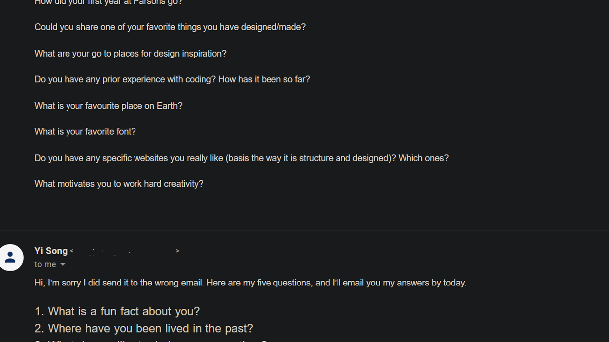
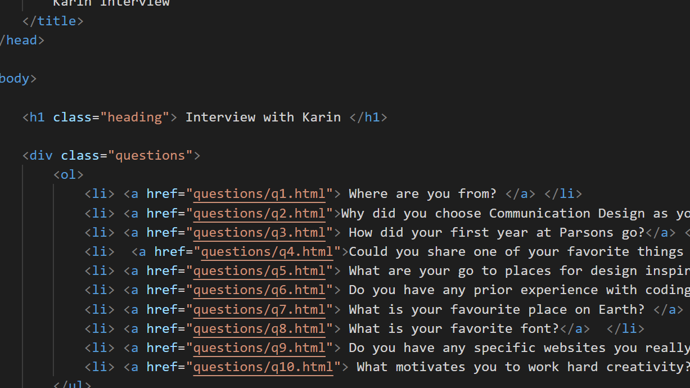
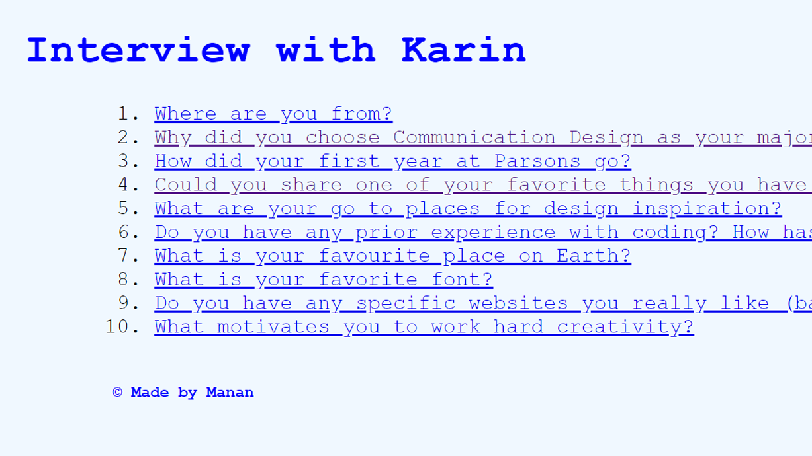

Week 1-2
This was the first project we were tasked with. Being brand new to HTML and CSS, it was very fun to explore and understand the basics.I was partnered with Karin. We started by sending each other the questions.
I included this project in my final portfolio, as it shows how much my skills have grown and developed over the past 14 weeks.
In 14 weeks, I was able to learn how I could develop my own fully-functional portfolio website! Certainly successful course.
